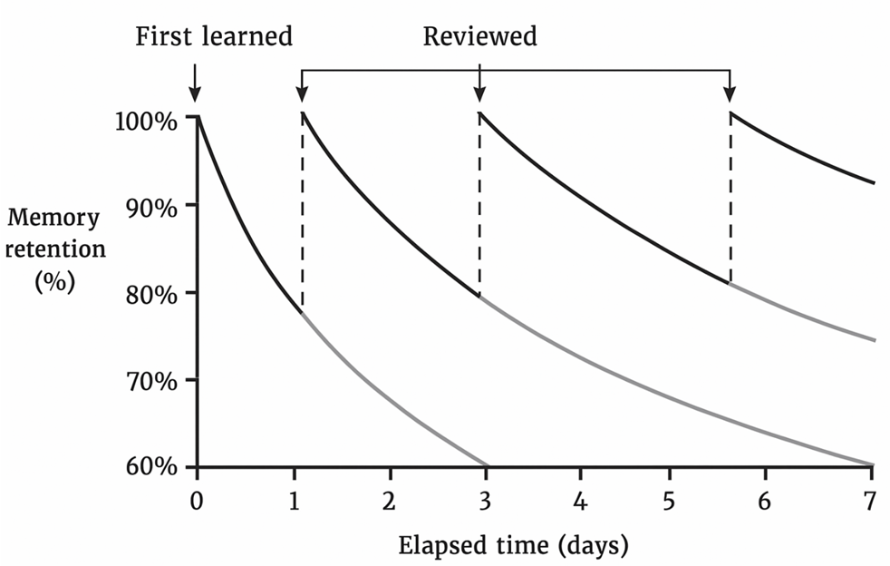

This content has been extracted from the original PDF and converted into HTML format to enhance accessibility and flexibility for readers in various language environments. The primary goal is to facilitate easier reading, translation, and comprehension compared to the static PDF format. This document is intended solely for educational and non-commercial purposes. Please respect the intellectual property of the original author.
本内容已从原始 PDF 中提取并转换为 HTML 格式，以增强不同语言环境读者的可访问性和灵活性。主要目的是为了比静态 PDF 格式更方便阅读、翻译和理解。本文档仅供教育和非商业目的使用。请尊重原作者的知识产权。
Polymathinvestor.com | November, 2025
From: https://substack.com/@polymathinvestor/note/c-174384846
ENCODING & COMPREHENSION HEURISTICS
Preview First (Survey the Structure) – Begin any book or paper with a quick overview. Skim the table of contents, headings, introduction, and summary to grasp the outline before diving into details.
- Why It Works: This "big picture first" approach (seen in methods like SQ3R's Survey step) gives your brain a framework to slot details into, improving comprehension.
- Practical Application: Spend ~5–10 minutes per chapter on this preview; for example, read section headings and the abstract so you know the major topics in advance.
Ask Questions & Set Intentions – Active readers approach text with questions in mind. Before reading a section, turn the heading into a question (e.g. "What is X?") and read to find the answer.
- Why It Works: Having a purpose focuses your attention and engages your curiosity, which boosts comprehension and memory. It transforms reading from passive intake into an active hunt for answers.
- Practical Application: Write down a few questions you want the material to answer. For instance, if you're reading a research paper, you might ask "What problem are they solving?" or "What are the key findings?" and then read to answer those.
Layered Reading (Multiple Passes) – Read in layers of depth instead of one cover-to-cover slog. Do a quick systematic skim (inspectional read) to get the gist, then a slower analytical read for understanding, and a deep dive only on the most relevant or challenging parts.
- Why It Works: Each pass builds on the last, first mapping the territory and then filling in detail. This prevents getting bogged down in minutiae before you understand the context.
- Practical Application: For a dense article, you might first spend 5 minutes skimming headings and conclusion, then read fully but don't stop at hard parts (that's a "superficial read"), and finally re-read key sections or math proofs in depth if needed.
Active > Passive Reading – Engage actively with the text. Mark up the book with marginal notes, highlight sparingly, and paraphrase key ideas in your own words. Passive reading (just moving your eyes over text) is a recipe for low retention.
- Why It Works: Active reading forces you to process and rephrase ideas, which creates stronger memory traces than passive re-reading. By writing notes or summaries, you're essentially teaching the material to yourself, engaging recall and deeper thinking.
- Practical Application: Treat reading as a conversation – jot down questions, reactions, and connections to other ideas as you go. For example, after a pivotal paragraph, you might pause and note: "This parallels what I read in X's book – perhaps the same principle in action."
The 20% Highlighting Rule – Highlight and underline very selectively – ideally no more than 10–20% of the text. Mark only the most important points or phrases that capture the essence.
- Why It Works: Over-highlighting is a form of mental laziness that can hinder memory (you end up bypassing the decision of what's truly important). Research shows that students who highlight too much remember less, and setting a strict limit (e.g. one sentence per paragraph) yields better retention. Focused highlighting forces you to evaluate and prioritize information, engaging critical thinking.
- Practical Application: Try the rule of thumb: for each page, highlight at most a few key sentences. If you find you want to highlight everything, it's a sign to stop and summarize instead. This way when you review, the marked parts truly represent the core ideas.
Note Density & Paraphrasing – Keep your notes concise and in your own words. Rather than transcribing passages verbatim, write brief paraphrases or bullet points of the key idea. One expert rule of thumb: if your notes are almost as long as the text, you're not summarizing.
- Why It Works: Paraphrasing requires you to process the meaning and re-encode it in your personal vocabulary, which dramatically improves understanding and recall. It also produces "memory hooks" more relevant to you.
- Practical Application: After each section or concept, pause and jot a one-sentence summary from memory.
Focused Attention (Eliminate Distractions) – Read in an environment optimized for concentration. Memory formation requires attention, so remove or minimize distractions: silence your phone, close unrelated tabs, and consider using a physical book or a distraction-free reader mode.
- Why It Works: Divided attention is detrimental to encoding memories – multitasking or frequent interruptions can cause new information to never properly register in memory. Many elite readers ritualize deep-focus reading sessions (often in the early morning or late night) to get uninterrupted absorption.
- Practical Application: Create a reading ritual: e.g., a 30-minute block in a quiet spot, with notifications off. If your mind wanders, try techniques like the Pomodoro (25 minutes reading, 5 minute break) to train sustained attention. Over time, these habits help you enter a "flow" state with texts, encoding them more deeply.
Understand Before Judging – Approach new material with an open mind and delay critical judgment until you're sure you understand the author's ideas.
- Why It Works: This is a classic Mortimer Adler rule – by suspending initial disagreement or bias, you ensure you fully comprehend the argument, which leads to better retention and a fair evaluation. If you jump to critiquing too early, you may focus on rebuttals or emotions instead of the content, missing key points.
- Practical Application: As you read, make it a rule that you can't say "I disagree" (or agree) until you can summarize the author's position clearly. For example, if reading an investing thesis that goes against your instincts, first outline the thesis on its own terms. Only after you could explain it to someone else do you weigh in with your critique. This mindset fosters deeper engagement and memory, because you process the material fully instead of cherry-picking bits to contest.
Pacing and Chunking – Break reading into manageable chunks for better processing. Rather than marathon sessions that blur together, read in focused segments (e.g. one chapter or section at a time) and take short breaks to recap.
- Why It Works: Our working memory can only hold so much at once, roughly 4–7 new items. Chunking information into sections helps you encode one "batch" before moving on. It also capitalizes on the serial position effect (we remember beginnings and endings of sessions better).
- Practical Application: You might decide to read one research paper section (introduction, methods, etc.) at a time, pausing after each to verbally recap what you learned. If a chapter is long, mentally break it into subsections. This way, you give your brain a chance to digest and consolidate each piece. As a bonus, ending a session at a cliffhanger or with an unresolved question can spark curiosity for the next chunk.
Time Budgeting (The 80/20 of Reading) – Allocate your reading effort wisely. Elite readers often apply a "80/20 rule", focusing 80% of their time on the 20% of content that yields the most insight. In practice, this means not all pages get equal attention.
- Why It Works: Not everything in a book or paper is high-yield. By quickly identifying which sections contain key arguments or novel insights, you spend time where it matters most. This improves retention of important points (because you gave them more focus) and prevents burnout on lesser sections.
- Practical Application: In a nonfiction book, you might spend a lot of time on the core chapters (re-reading or taking extensive notes on Chapter 3 which has the main thesis) but merely skim anecdotal chapters or filler. Similarly, if you're researching, you might deeply read the one paper out of five that directly answers your question, while scanning the others for only relevant data. This strategic allocation ensures the vital knowledge sticks, rather than a shallow recall of everything.
MEMORY & RETENTION FRAMEWORKS

Figure 1: The classic forgetting curve (red) shows how learned information fades over time without reinforcement. Spaced review sessions produce the green curves – each review strengthens memory and slows forgetting, so intervals can become increasingly longer. This illustrates why spaced repetition is essential for long-term retention.
Spaced Repetition (Spacing Effect) – Review information at strategically increasing intervals rather than cramming. For example, revisit notes one day after reading, then a few days later, then weeks, etc.
- Why It Works: Spacing exploits the brain's memory consolidation processes. Each time you refresh your memory right as it's starting to fade, you not only recall it but reinforce it more strongly, building resistance to future forgetting. Research indicates that optimal intervals are often around 10–20% of the desired retention period – to remember something for 1 week, review after 1 day; to retain for a year, review every 1–2 months.
- Practical Application: Use a system or app (or calendar reminders) to schedule reviews. For instance, if you finish a chapter today, quiz yourself tomorrow on the key points, then again next week. Many use flashcard software (like Anki) that automatically schedules cards at expanding intervals. Even a simple habit of "one-hour review for every five hours of reading" (i.e. a 1:5 review ratio) can dramatically improve what you retain over months.
Active Recall (Retrieval Practice) – Test yourself on what you've read without looking at the material. This can be through flashcards, practice questions, or simply closing the book and reciting/summarizing key ideas from memory.
- Why It Works: Forcing your brain to retrieve information strengthens the neural pathways for recall far more than re-reading does. In studies, self-testing consistently outperforms passive review – students who practice recalling information can remember ~50% more in the long run than those who only review notes. It also quickly highlights what you haven't mastered, so you know where to focus.
- Practical Application: After finishing a section or an entire book, take a blank page and write down the main points you remember (this is sometimes called the "Blank Sheet" or Feynman approach). If you struggle to recall something important, mark that topic for re-study. Similarly, use flashcards for key facts or concepts – when reviewing, don't flip the card until you've tried to answer; the effort is where the learning happens.
Mnemonic Devices & Association – Use memory techniques like acronyms, imagery, or the Memory Palace (Method of Loci) to encode complex information in memorable ways.
- Why It Works: These techniques leverage the brain's strength in spatial and visual memory. The Method of Loci, for example, ties information to a vivid mental location journey – our ancestors evolved to remember places and images, so translating abstract text into visual-spatial stories makes it "stickier." Creating exaggerated, bizarre images for ideas can make them stand out in your mind.
- Practical Application: To remember a list of key points or categories from your reading, imagine a familiar room and mentally place an image representing each point in a specific spot. If reading a biography with many dates, you might turn each date into an image and "walk" through a path where each landmark reminds you of an event. Memory champions use these methods to recall decks of cards or long numbers; as a reader, you can use them to recall, say, the seven principles from a book by visualizing each principle as a bold symbol along a walking route. It requires a bit of creativity, but it's a powerful way to recall details weeks or years later.
Chunking Information – Group related bits of information into larger "chunks" that make sense, rather than trying to remember each bit in isolation.
- Why It Works: Our short-term memory can only juggle a limited number of items at once (commonly cited as 7±2). Chunking bypasses this limit by collapsing many items into one meaningful unit. For example, remembering "149217761945" as "1492, 1776, 1945" (three dates) makes it far easier. In reading, chunking might mean organizing details under bigger themes or narratives, which your brain can recall as wholes.
- Practical Application: When reading a complex paper, identify 2–3 key concepts and treat the supporting details as sub-parts of those concepts (chunks) rather than a dozen separate facts. Make mind maps or outline notes where several facts are nested under one heading. By collapsing details into a higher-order idea, you effectively reduce the load on memory and make retrieval more efficient (because recalling the big idea will cue the smaller facts). For instance, if you have to recall the causes of a historical event, remember a phrase or acronym that encapsulates all causes (like "MANIA" for WWI causes: Militarism, Alliances, Nationalism, Imperialism, Assassination), which acts as a chunk containing the sub-items.
Interleaving Practice – When reviewing or studying multiple subjects, mix them up instead of doing one subject/item repeatedly then moving to the next. In other words, intersperse different topics or problem types in one session.
- Why It Works: Interleaving creates desirable difficulty – it prevents you from slipping into autopilot and forces your brain to continually retrieve and differentiate between concepts. It combats the illusion of mastery that comes from doing one type of problem over and over (where you're just learning a pattern). By mixing A, B, C, A, C, B, etc., the brain must recall the approach each time afresh, which strengthens learning.
- Practical Application: If you're reading and want to remember ideas from multiple sources, don't finish all of book A then all of book B; try reading a chapter of A, then one of B, and perhaps later revisiting A. Or when reviewing, shuffle your flashcards from different domains rather than sorted by chapter. For example, medical students might practice anatomy, pathology, and physiology questions interleaved, so they learn to recognize which topic a problem requires.
- Heuristic: The more your practice feels a bit effortful and varied (as interleaving does), the more robust your learning likely is – "train like you fight" so your brain can apply knowledge in any order, not just in the sequence learned.
Elaboration & Dual Coding – Explain and connect new knowledge with what you already know, and use multiple modes (verbal, visual) to encode it. Elaboration means asking "why?" and "how?" and associating new facts with existing ideas or personal experiences. Dual coding involves combining words with visuals (e.g. drawing a diagram or timeline of what you read).
- Why It Works: Elaboration strengthens memory by embedding new information in a rich network of cues – each connection (a prior knowledge link, an example, a metaphor) is a retrieval cue. This transforms isolated facts into integrated knowledge. Dual coding leverages the brain's visual processing; by engaging both linguistic and visual memory, you create two pathways to recall the information (and if one fades, the other might still trigger recall).
- Practical Application: After learning a concept, take a moment to explain how it works in your own words and how it relates to something you know ("This economic principle is like water finding a level – it reminds me of how…") – essentially teaching it to your future self. Also try sketching a quick diagram or mind map of the idea. If you read about a complex process (say, how a bill becomes law), draw a flowchart of the steps. These techniques ensure you're not just repeating the material but reorganizing and reprocessing it, which boosts retention.
Immediate Review & 24-Hour Rule – Revisit new material soon after learning – ideally the same day or within 24 hours – to reinforce it while it's fresh.
- Why It Works: Without review, we forget a huge portion of new information quickly (some studies say up to 70–80% by the next day). A quick review or self-quiz within a day interrupts this forgetting process and signals to your brain that this information is worth retaining (cueing the consolidation process during sleep). It's the first important boost in spaced repetition.
- Practical Application: Build a habit of end-of-day recap: if you read something in the morning, take 10 minutes in the evening to skim your notes or recall the key points. If you're a student, review the class notes the same afternoon. Even better, write a brief summary or teach it to someone that day. This could be as simple as explaining at dinner, "Today I learned about X, basically it means…". The next-day review doesn't need to be long – it can be a glance over highlights or a quick mental quiz – but it dramatically increases what makes it into long-term memory.
"One Month Later" Test – Adopt the mindset that learning isn't complete until you can still recall it after some time passes. Many memory experts treat the true test of learning as what's retained after weeks, not minutes.
- Why It Works: This mindset reinforces the importance of long-term retention over short-term performance. It encourages use of the techniques above (spacing, recall, etc.) because if you only rely on short-term memory, you'll fail the "month later" test. It's essentially a heuristic to keep you honest about whether you've learned something deeply.
- Practical Application: After finishing a book or course, set a calendar reminder for a month (or several months) later with the prompt "What do I remember from X?" When that day comes, try to write down or mind-map everything you recall without looking. The gaps will reveal what didn't stick. This practice can motivate you to schedule periodic refreshers and also to focus on understanding (since rote cramming that doesn't last a month is revealed as time wasted). By consistently checking in on older material, you build a continuous retention loop and avoid the trap of forgetting knowledge you thought you "knew."
SYNTHESIS & INTEGRATION
Make Connections (Latticework of Mental Models) – Connect new ideas to existing knowledge at every opportunity. Elite thinkers often deliberately relate what they read to their established mental models or frameworks. Charlie Munger calls this building a "latticework" of knowledge – each new fact hangs on something you already understand.
- Why It Works: Memory is enhanced by association. When new information attaches to multiple anchor points in your mind, it's more retrievable and more meaningful. Integration also transforms inert facts into usable knowledge – you see how it fits with or challenges what you know, which aids problem-solving and creativity.
- Practical Application: After reading a concept, ask yourself: "Where have I seen something like this before?" or "How does this principle play out in my field or life?" For example, if you learn about feedback loops in biology, connect it to feedback loops in economics or personal habits. Jot these connections in your notes ("X is a specific case of the Y principle I learned earlier"). Over time, you'll have a rich web where each node reinforces others, making the whole network more robust. This is the essence of multi-disciplinary learning – linking ideas across fields so they reinforce one another.
Feynman Technique (Explain It Simply) – Use the Feynman Technique as a synthesis tool: try to explain the material in plain, simple terms as if teaching a novice (or your past self). If you struggle, pinpoint the gap and return to the source to fill it.
- Why It Works: Explaining reveals your level of understanding. "If you can't explain it simply, you don't really understand it." In forcing simplicity, you identify conceptual gaps or fuzzy areas that you glossed over. This technique also converts passive knowledge into active recall and analogies, which are easier to remember.
- Practical Application: After finishing a chapter or paper, take a blank page and write a one-paragraph "explanation for a layperson." Pretend you have to teach a smart 12-year-old: avoid jargon, use examples or analogies. For instance, if you read about blockchain and need to remember it, you might write: "A blockchain is like a ledger everyone has a copy of – imagine a Google doc that anyone can add a line to, but once added, it can't be changed. This solves the problem of…". In doing so, you distill the essence. Any part you can't explain reveals a target for deeper review. This not only cements understanding but gives you a simplified memory of the concept crafted in your own words.
Zettelkasten & Atomic Notes – Many prolific researchers use a Zettelkasten or slip-box system: breaking ideas into atomic notes and linking them via references. Each note contains one idea, written in your own words, and is connected to related notes.
- Why It Works: This external system mirrors a well-connected brain. It forces you to synthesize each idea concisely (a form of elaboration) and then creates a web of links that often generates new insights. By revisiting and linking notes, you continually integrate knowledge and reinforce memory. The act of writing "permanent notes" prompts you to consider how the new info fits with other topics, enhancing understanding and recall.
- Practical Application: After reading an article or chapter, write a few permanent notes: one per insight or idea. For example, if reading a paper on behavioral economics, you might write one note summarizing "The Endowment Effect" in your own words, and another note on "Implications for market pricing," etc. Tag or link these to any existing notes (e.g., connect "Endowment Effect" note to your "Cognitive Biases" note). Over time, you'll build a personal knowledge database. When you add new notes, look for connections (does this concept support or contradict something I logged before?). This workflow, while effortful, greatly improves retention because each note is a mini-reiteration of what you learned and a hook into a larger framework.
Progressive Summarization – This is a technique popular among digital note-takers: summarize the material in layers, each time distilling it further. For instance, first you highlight key points from a chapter, then later you bold the most critical points among those highlights, then you write a high-level summary of those.
- Why It Works: By revisiting content multiple times with the goal of compressing it, you engage recall and discernment repeatedly. Each pass forces you to recall why something was important and how to express it more succinctly. It also leaves you with ultra-condensed notes that are easier to review later (which encourages more frequent review).
- Practical Application: Say you read a 30-page report. After reading, highlight notable sentences (that's layer 1). A day later, open your highlights and mark the top 15% of those (layer 2) – the highlight of the highlights. A week later, use those to write a one-page executive summary (layer 3) capturing the core ideas. By the end, you've processed the content multiple times at decreasing lengths, so you can recall the material from the one-page summary alone. This method is a rule of thumb for balancing depth and brevity: extract the essence without losing the context, doing so in stages so you don't oversimplify too early.
Balance Breadth vs. Depth – Adopt heuristics to know when to go deep and when to pull back for breadth. One common rule: "Skim a lot, read a few, re-read the best." In other words, it's fine (even wise) to skim many sources to identify the most valuable ones, then invest deep, thorough reading in those, including re-reading them for mastery.
- Why It Works: Not all information is equally valuable. Experts maximize their ROI on reading by quickly filtering out fluff or low-quality sources (breadth scanning) and concentrating their time on high-quality, high-density material (depth). Re-reading the top 1% of books yields more insight than reading 10 mediocre ones once. This approach leads to both a broad exposure (which helps cross-pollination of ideas) and deep expertise where it counts.
- Practical Application: If you're researching a topic, you might scan 10 articles (or the abstracts of 10 papers) – that's breadth – then choose the top 2 that seem most relevant or insightful to read in full. If one of those is exceptionally useful, plan to re-read it or its key chapters after some time. As another example, an investor might skim many company reports but deeply analyze the few that show real promise.
- Heuristic: Don't feel obligated to finish every book – quitting books that aren't valuable is a skill. Conversely, if a book profoundly influences your thinking, schedule a re-read in a few months to catch insights you missed (each deep pass will reveal new layers, further cementing the knowledge).
When to Re-read vs. Move On – A good rule of thumb: re-read if the material is foundational or exceedingly rich, but don't re-read things that you only partially understood due to poor writing or which don't align with your goals (in those cases, find a better source on the topic).
- Why It Works: Re-reading is a form of spaced retrieval – the second read is faster and cements what you learned, often clarifying nuances you missed. However, it has diminishing returns if the source wasn't well comprehended because of its quality or if it's not worth mastering. Experts selectively re-read classics or seminal papers precisely because each pass yields new understanding. They let go of less useful readings to free time for new material.
- Practical Application: After finishing a book, ask: "Did I grasp the key ideas, and will deeper understanding significantly benefit me?" If yes (especially if it's a timeless or high-value work), mark it for re-reading. Some follow a habit like re-reading one favorite book each year. If no (you got what you needed or it wasn't great), summarize what you learned and move on guilt-free. This way, re-reading becomes a strategic tool (for depth on the best ideas) rather than a compulsive habit. It also forces you to articulate what "value" you got from a reading – a metacognitive step that in itself aids retention.
Apply and Synthesize as You Go – Convert reading into usable output: notes, essays, models, decisions, teaching, etc. The sooner and more frequently you use the knowledge, the better you'll integrate it.
- Why It Works: Synthesis – whether through writing or teaching or applying to a project – moves knowledge from passive recognition into active skill. It creates multiple retrieval and application contexts (which strengthens memory) and gives you feedback on your understanding. For example, writing about what you read forces you to clarify fuzzy points, and teaching it to someone often exposes gaps in logic. Additionally, when you use knowledge in decision-making (say, using an investing principle from a book in a real investment), the stakes and emotional engagement make that knowledge far more memorable.
- Practical Application: For every significant piece you read, try to produce something with it. This could be as modest as a tweet-thread summary or as involved as a blog post or internal memo. If you're a student, discuss the reading with a study group, trying to explain key insights. If you're an investor or professional, formulate how the reading informs your strategy (e.g., "After reading about network effects, I added a checklist item to evaluate a company's network moat."). These acts of synthesis not only reinforce memory through repetition and elaboration, but also transform information into knowledge that's readily available when you need to make decisions or create new ideas.
TOOLS & SYSTEMS OF THE EXPERTS
Analog Note-Taking & Journals – Don't underestimate pen-and-paper systems. Many top performers keep paper notebooks, index cards, or physical journals as part of their reading workflow.
- Why It Works: Writing by hand can improve retention and understanding – it's slower than typing, which forces you to be concise and process material (you can't scribble every word). It's also free of digital distractions. Analog systems like physical flashcards or a notebook of "book insights" provide a tactile memory cue; the spatial layout of notes on a page or the act of flipping through index cards creates context that aids recall.
- Practical Application: Consider maintaining a commonplace book – a dedicated notebook where you write down the best insights, quotes, or reflections from your reading. Because it's analog, you're more likely to truly digest what you write. Some people use a card index (Slip-box): each idea on a separate index card, which can be shuffled, sorted, and reviewed. This was Niklas Luhmann's approach with his Zettelkasten, done entirely on paper. A simple analog habit is to always read with a pencil in hand: underline key lines and scribble notes in the margins or on sticky notes. Later, physically review these markings – the slower pace of analog review often leads to more contemplation and better retention than skimming digital highlights.
Digital Second Brain (PKM Apps) – Power users build a "second brain" using digital tools like Obsidian, Roam Research, Notion, or Evernote. These tools act as an external memory: you can dump highlights, write summaries, link notes, and tag topics for later retrieval.
- Why It Works: A well-organized digital note system means you can capture knowledge with minimal friction and retrieve it easily with search or links. Tags and backlinks mimic associative memory – when you pull up a note on, say, "Opportunity Cost," you immediately see its links to "Decision Making" or "Behavioral Economics" notes. This web of connections helps with context recall (you remember not just the fact, but how it connects to others). Plus, writing notes in a system knowing you'll revisit them encourages more effortful processing now (since you're effectively teaching your future self).
- Practical Application: Choose a note-taking app and start building a knowledge base: after finishing a book or article, enter the key ideas as individual notes. Use descriptive titles (e.g., "Hedonic Adaptation (Psychology)") so you can find them later. Link related notes – if one note is about a concept that relates to another, hyperlink them or use tags. Over time, when you learn something new, search your own notes first – this reinforces prior knowledge and integrates the new information. For instance, if you're reading about a new marketing strategy, you might search your second brain for "marketing" and recall several frameworks you noted before, which prevents siloed learning. The expert heuristic here is: don't trust important knowledge to stay in your head alone – offload it to a reliable external system that you regularly curate.
Spaced Repetition Software – For facts, definitions, or anything you absolutely want to remember long-term, tools like Anki, SuperMemo, or Mnemosyne implement spaced repetition algorithms automatically. You input flashcards (Q&A) and the software schedules reviews at optimal intervals based on your performance (e.g., if something was easy, it might test you in a month; if hard, tomorrow).
- Why It Works: This is basically outsourcing the scheduling of the Spacing Effect. These systems are proven to significantly boost retention with minimal time – you review information right before you'd forget it, which is the most efficient use of study time. They also leverage active recall (since flashcards force you to retrieve the answer).
- Practical Application: After reading a chapter or paper, quickly make flashcards for key details you want at your fingertips: e.g., a new vocabulary term, a formula, a historical date, a key theory and author. Spend 5 minutes a day in your SRS app reviewing the mix of old and new cards. Many professionals (doctors, lawyers, linguists) use Anki decks to keep essential knowledge fresh. For a knowledge worker or investor, you might maintain a deck for mental models or industry facts. The minimum effective system here: even if you only make 1-2 cards per reading, over a year you'll curate hundreds of high-yield facts with scheduled refreshers. That said, not everything should be a flashcard – focus on things that benefit from verbatim recall or Q&A format. Concepts and insights might live better in narrative notes, whereas discrete bits (like "What are the 3 layers of the brain?" or "Equation for compound annual growth rate?") shine in flashcards.
Frictionless Capture – Experts establish ways to capture ideas and quotes on the fly, so no insight is lost. They carry notebooks or use quick-capture apps because they know inspiration or recall can be fleeting.
- Why It Works: Memory is fallible – you might have an important thought ("this relates to concept Y!") while reading, but if you don't record it, it may vanish. By lowering the friction to capture (one tap on your phone to a note, or a pocket notebook always at hand), you externalize these thoughts immediately. This also frees your mind to focus – once an idea is captured, your brain trusts it doesn't have to keep actively remembering it, reducing cognitive load.
- Practical Application: Set up a system that works for you: it could be a small Moleskine notebook you always keep, or a note app widget on your phone, or even voice memos. The key is speed and ease – if it takes more than a few seconds to jot something down, you'll resist doing it. For instance, when reading a physical book, you might use a notebook to jot page numbers and thoughts; when reading digitally, use a tool like Readwise or Kindle highlights to quickly mark and later export notes. Many readers also use sticky notes or flags on pages to mark insights to transfer to their note system later. The rule of thumb: if an idea strikes you as important or if you have a question, capture it in that moment – you can always refine or discard it later, but you can't recover a thought not written down.
Tagging and Search Strategies – In any note or knowledge system (analog or digital), use simple tags or categories so that you can retrieve information later in the way you'll think of it.
- Why It Works: Our memory often works by association – you might not recall the exact title of an article, but you remember it was about "machine learning in healthcare." If your notes are tagged "MachineLearning" and "Healthcare," you can find it quickly. Tagging (or even just careful naming of files/notes) ensures that when you search, you catch the relevant items. This prevents the common scenario of "I know I read this somewhere but can't find my notes on it." By designing your personal library with retrieval in mind, you effectively augment your memory with a powerful index.
- Practical Application: Develop a consistent tagging or folder scheme that fits your domains of interest. It can be as simple as tagging notes by topic, book, and year. For example, after reading an investment letter, you might tag it #InvestorLetters #2025 #AIIndustry – so later if you need insights on AI investments, a tag search for "AIIndustry" pulls it up. Another heuristic is to put a short bibliographic reference on every note or card (e.g., source and page number); this not only helps when you need to cite or dig the original context, but the act of noting the source reinforces the memory of where knowledge came from (context is a cue). In short: make your external memory navigable. Experts spend a bit of effort up front to label and organize information so that future retrieval (and thus usage) is painless.
Minimum Effective Organization – While systems are great, there's a point of diminishing returns in over-organizing. The pros follow a rule: make it as simple as possible, but no simpler. Your system should serve you, not the reverse. If maintaining your notes becomes a chore that eats into reading time, it's too much.
- Why It Works: The best system is one you actually use consistently. A lean system also forces you to focus on the core: the ideas and facts worth keeping. It's better to have a simple set of notes you review often than a massive database you never revisit.
- Practical Application: If you're just starting out, begin with one tool and one habit. For example, decide that after each book you'll write a half-page summary in a notes app. That's it – no fancy backlinks or tags yet. Get comfortable with that habit; see the benefit. Only add complexity (like tagging, or splitting notes by categories, or using advanced apps) if you find you need it. Many people find a hybrid system works: perhaps use a paper notebook for daily jotting and reflections, and a digital system for archiving and search. The "minimum effective" approach might mean you review and prune notes regularly – if you never look at a type of note, why create it? Copy the 20% of notes that really matter into a distilled document. Professionals often have a top-level document or slide deck of key principles that they refine over time (e.g., an investor's checklist or a researcher's core hypotheses) – that is a synthesis of syntheses, much easier to maintain than hundreds of scattered notes. The takeaway heuristic: A simpler system reviewed regularly beats a complex system reviewed rarely. Opt for workflows that fit seamlessly into your life, so that you'll stick with them and continuously build your knowledge.
MINDSET & BEHAVIORAL HEURISTICS
Curiosity is the Engine – Cultivate a curious mindset whenever you read. Elite learners approach material with genuine interest and questions, even if it's technical or dry. This curiosity isn't just feel-good – it has a physiological effect: being curious primes the brain's reward and memory centers, releasing dopamine that enhances learning.
- Why It Works: Studies show that when you're highly curious about a topic or question, you remember the answer better and even remember unrelated information presented at the same time. Curiosity creates a heightened state of focus and enjoyment, which means deeper processing. It's essentially telling your brain "this is important, save this!"
- Practical Application: Turn learning into a game of discovery. Before diving into a chapter, spend a minute thinking, "What do I find intriguing here? What do I want to know?" Even if the reading is assigned or necessary for work, find an angle that sparks you ("How could this method apply to my project?" or "What's the most surprising thing here?"). Some people use techniques like previewing questions or making predictions to stoke curiosity. For example, scan section headings and guess what the conclusions will be – this creates an active question in your mind that drives you to find out if you were right. By maintaining a learner's curiosity (the mindset of an eternal student), you'll naturally pay closer attention and retain more, because your brain is actively seeking to fill gaps and reward itself with insight.
Growth Mindset for Memory – Believe that memory is improvable with strategies and practice, not a fixed trait. Top memorizers and thinkers operate with the conviction that they can train their brains (because they have, through techniques).
- Why It Works: A growth mindset leads to more persistence and adaptive strategies. If you hit a comprehension wall or forget something, instead of "I'm just bad at remembering," you think "I haven't mastered this yet. What technique can I use?" This opens you to trying new approaches (like the ones in this primer) and practicing them. Psychologically, it reduces anxiety around forgetting, which actually helps memory – stress can impair recall, whereas confidence can boost it.
- Practical Application: Pay attention to your self-talk as you learn. Replace "I can't remember names, so I won't try" with "I haven't used a good method for names – maybe I'll try a visualization next time." Treat memory lapses as feedback on your method, not your brain's worth. Many memory champions started average and improved via training; keep that in mind as proof. You might even keep a journal of learning wins, noting instances where a new strategy paid off (e.g., "Used spaced repetition for a month – remembered 90% of the programming syntax in the review!"). Over time, as you see improvement, your belief in your memory ability grows, creating a positive feedback loop. In essence, adopt the identity of someone who remembers well, and act accordingly (e.g., that identity might be "I'm the kind of person who takes thoughtful notes and revisits them, which is why I remember things."). This mindset shift leads you to the behaviors that cause the improvement, making it a self-fulfilling prophecy.
Patience and Persistence – Those who retain a lot understand that memory is built with repetition and time. They are patient with the process of learning. Rather than cramming once, they'd rather revisit material periodically. Rather than expecting to recall 100% after one read, they expect to forget some and treat each review as part of the journey.
- Why It Works: Patience prevents frustration that can derail learning. By accepting that deep understanding and long-term memory form gradually (with each exposure strengthening synapses), you avoid the trap of giving up too soon or moving on too fast. Persistence – continuing to review or think about something over weeks or months – aligns with how memory consolidation naturally works (which can span days and require sleep cycles).
- Practical Application: Build long-term review routines into your life. For instance, a persistent learner might maintain a weekly review day where they spend an hour revisiting past notes or flashcards. They don't declare victory on learning something after one session; they'll revisit it next week, and maybe a month later. Adopting this habit requires a bit of faith early on, as results (like near-perfect recall) might only become apparent after multiple cycles. Remind yourself that every great expert likely went over the fundamentals dozens of times. When you encounter difficult material, be patient – take breaks, let your subconscious work, and come back to it later. This mirrors how, say, a mathematician might wrestle with a theorem over days – each day adding a bit more understanding until the breakthrough. Heuristic: "If I still don't get it, I haven't given it enough quality time yet." This patience can dramatically improve retention because it means you'll give your brain the spaced repetitions and deep dives it needs, rather than rushing and forgetting.
Discipline of Focus (Deep Work Habit) – Memory masters often have a habit of immersive single-tasking – dedicating blocks of time to focused reading or study without letting attention drift. They create an environment and routine that supports deep focus (quiet space, maybe a set time of day, no multitasking).
- Why It Works: Deep work leads to deeper encoding. When you are fully engaged with material, you pick up on nuances and form richer memories. By contrast, if you're half-focused (checking phone, etc.), the neural encoding is shallow and fragmented. Additionally, working in a focused state often gets you "in the zone," a pleasurable experience that can increase the emotional salience of what you learn (positive emotion also aids memory).
- Practical Application: Treat focused reading as a skill to practice. Start by carving out a small block – say 20 minutes – where you remove all distractions and commit to only reading/thinking about the task at hand. Gradually increase this duration as you build concentration stamina. Some use noise-canceling headphones or instrumental music to help maintain focus. Others create a ritual like a particular chair or cup of tea that signals "study mode." Also, batch your reading and learning if possible – instead of sprinkling it in tiny chunks amidst other tasks (which encourages shallow processing), gather it so you can achieve depth. For example, rather than reading emails and a few pages of a whitepaper in between, set aside an hour to read the whitepaper fully. The mindset here is treating your learning time as sacred and unitasking, much like an athlete trains with full presence. Over time, as you experience the benefits (e.g., "Wow, I actually remember and understand that article from last week because I was really present for it"), it reinforces the value of focused habit.
Habit of Reflection – People who retain knowledge well often reflect on what they read and learn. This might be through journaling, talking to others about it, or simply spending a few minutes in thought after consuming information.
- Why It Works: Reflection is a form of retrieval and elaboration. It prompts you to recall what you learned, consider its implications, and relate it to your life – all of which deepen memory. It also transfers knowledge from a passive state to an active one: instead of just moving to the next thing, you pause to let it "sink in." Moreover, reflection can surface any confusion, which you can then resolve (preventing erroneous or patchy memories).
- Practical Application: Incorporate a short reflection at the end of each study or reading session. For example, you could ask yourself: "What were the key takeaways? Do I agree or disagree? How might I apply this or how does it change my thinking?" Some keep a learning journal where each day they write a bullet-point list of things learned or questions arising. Even a 5-minute walk after reading, musing about the content, can be beneficial – research has shown that a brief rest or meditation after learning improves recall by giving your brain a chance to consolidate. The key is to avoid instantly distracting yourself with something new (like checking social media) right after learning; give your mind a quiet moment to digest. Over time, this habit not only improves retention but can also yield deeper insights, as your brain makes connections during these reflective pauses.
Environment & Context Management – Memory can be context-dependent, so experts sometimes exploit or control context to aid recall. They may consistently study in a particular location or create unique mental contexts for different subjects.
- Why It Works: We often recall information better in the same context we learned it. This is why studying in a similar environment to the exam can help. By controlling context (like always reading philosophy in your armchair by the window), you build associations between the environment and the material. Additionally, varying context deliberately can make memories more flexible (you learn it in multiple settings, so it's not tied to just one).
- Practical Application: One approach is to designate certain spaces or times for deep reading – e.g., the morning coffee routine in your kitchen nook is when you read challenging material. The sights, smells, and mood become cues that prime you for that content. Another approach is to use context as a mnemonic: e.g., if you're learning several categories of things, you might do each in a different room or with a different background music, so later recalling the melody of Bach might trigger your memory of the French vocabulary you studied with it. Some people even wear a particular hat or scent during study and then use it during recall (taking an exam with the same perfume, for instance). While you don't need to go that far for everyday purposes, being mindful of context can help – if you need to remember something at work, perhaps review it briefly at work so your brain ties it to that environment. Conversely, to make knowledge more robust, practice recalling it in new contexts too. Expert learners are aware of these effects and use environment to their advantage – whether that's by optimizing a distraction-free zone or by context-tagging their learning for easier retrieval.
Healthy Body, Healthy Mind – Top performers know that memory isn't just a mental game; physical factors like sleep, nutrition, and exercise play a huge role in cognitive performance. They prioritize sleep and avoid habits that impair concentration.
- Why It Works: Sleep is critical for memory consolidation – during certain sleep stages, the brain rehearses and solidifies new memories. Nutrition (omega-3s, etc.) and exercise boost brain health and neuroplasticity, making learning easier. Exercise in particular has been shown to improve memory and even spur neuron growth (BDNF release). Hydration and avoiding excessive alcohol (which can disrupt memory formation) are also key. In short, the brain is part of the body; caring for your body directly improves your ability to encode and recall information.
- Practical Application: Treat your learning like an athlete treats training: get a good night's sleep after intense learning to let the memories set. If you are pulling long study days, take short exercise breaks – even a brisk 10-minute walk can reset your focus and help with memory by increasing blood flow. Many find morning exercise improves their subsequent focus for reading. Also, be mindful of caffeine and nutrition: a moderate amount of caffeine can heighten focus, but too much might cause jitters or a crash during study. Stay hydrated; even mild dehydration can impair cognitive function. And of course, avoid trying to study when extremely tired – better to sleep and wake up earlier to study, as retention will be higher. This heuristic can be summarized as: "Memory is a marathon, not a sprint; train and fuel accordingly." The people who "remember everything" often also have disciplined lifestyles that support their cognitive health, allowing them to consistently perform mentally at a high level.
Finally, consistency and passion tie all these heuristics together. The best readers and learners genuinely enjoy the process of learning and memory-building – it's not a chore but a lifelong habit. They combine the above rules of thumb into daily routines, almost like a personal game of continuous improvement. By blending sound strategies (both cutting-edge and old-school analog) with the right mindset, they manage to retain and internalize a remarkable amount of what they read – and most importantly, apply that knowledge to achieve wisdom and results. Each heuristic on its own can help, but together they create a synergistic effect, turning reading from a transient act into a lasting influence on one's thinking. Use this primer as a toolbox: start with a few techniques that resonate with you, practice them until they become second nature, and add more over time. With a bit of patience and experimentation, you'll find your capacity to remember and leverage your reading growing month by month, which is one of the most empowering improvements one can make in the information age.
Happy reading and remembering!